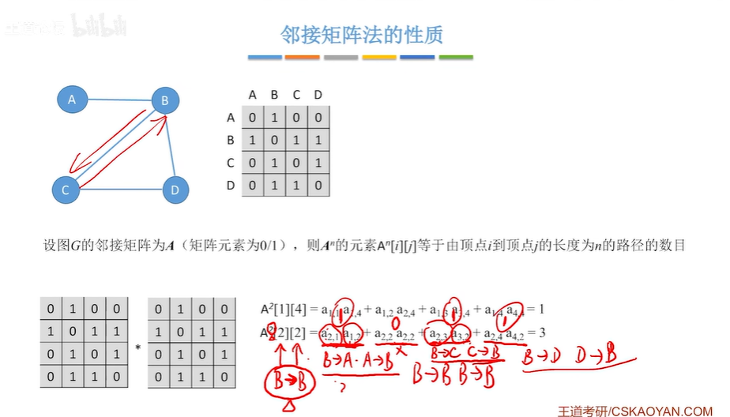
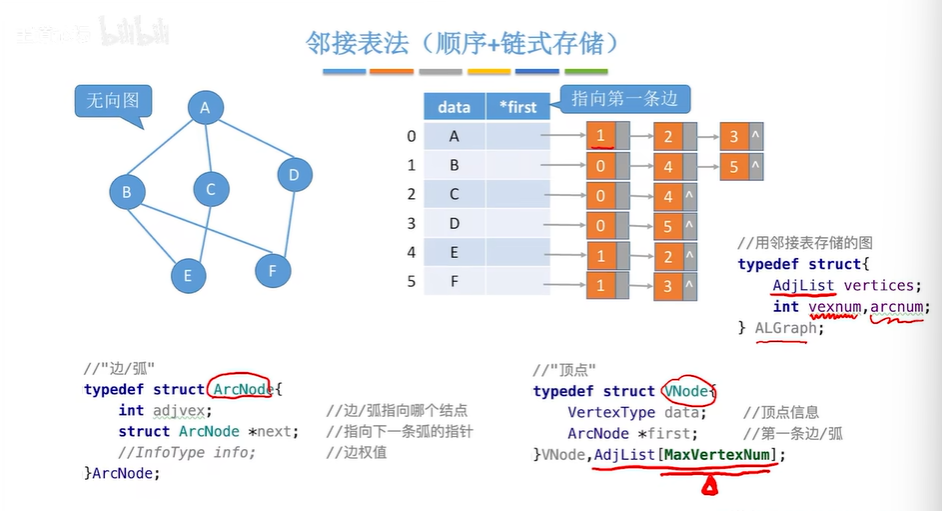
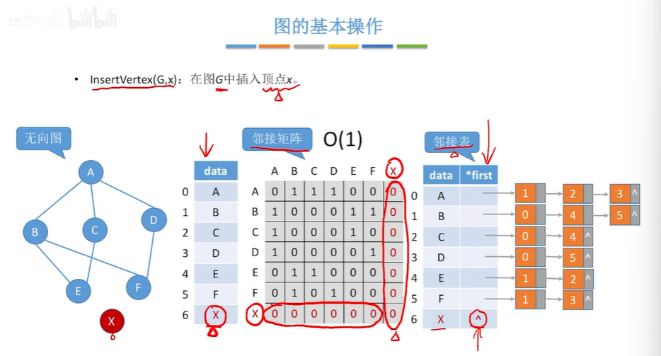
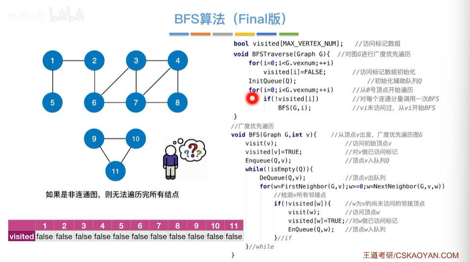
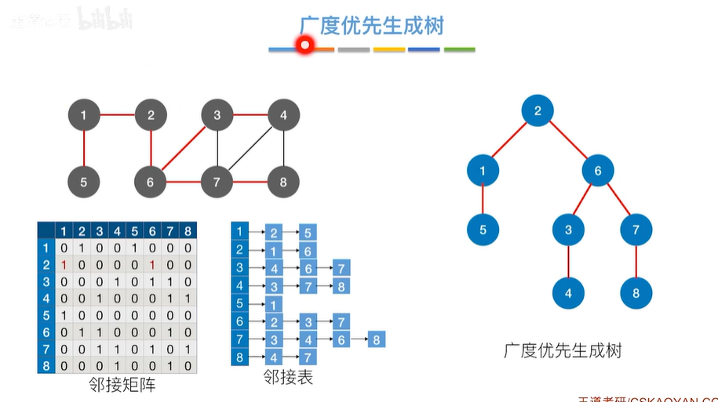
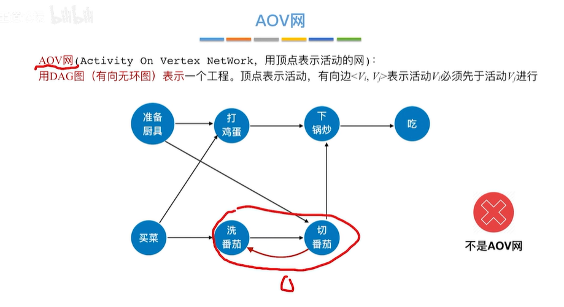
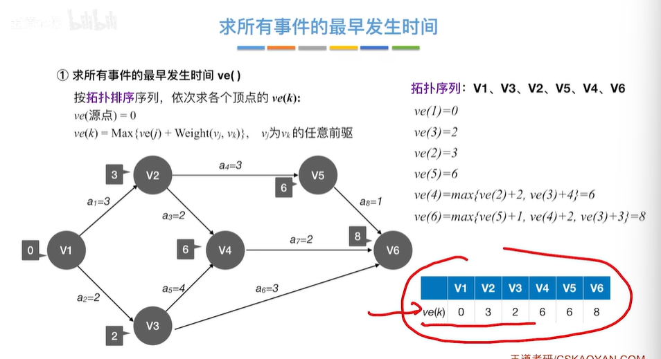
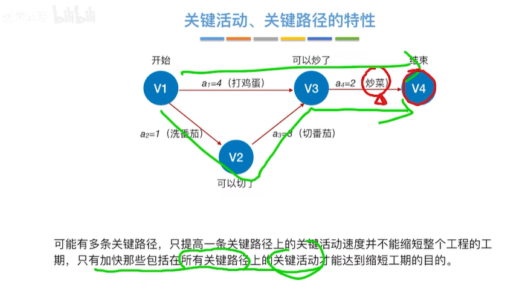

6. 图¶
6.1 图的基本概念¶
图的定义¶
图一定非空，必须有顶点。
无向图、有向图¶
简单图、多重图¶
顶点的度、入度、出度¶
路径、回路、简单路径、简单回路、路径长度、点到点的距离¶
连通、强连通¶
连通图、强连通图¶
子图、生成子图¶
无向图和有向图的子图概念相同。
连通分量¶
连通分量：无向图中的极大连通子图。
强连通分量：有向图中的极大强连通子图。
生成树：包含图中全部顶点的一个极小连通子图。（n个顶点则有n-1条边）
- 生成树的应用：n个不相连的村庄通路规划。
生成森林：非连通图中，连通分量的生成树构成了非连通图的生成森林。
网：带权图，边上带有权值的图。（有向图、无向图都可以。）
强连通分量¶
生成树¶
生成森林¶
边的权、带权图/网¶
完全图¶
稀疏图、稠密图¶

树¶
树是连通图，但是有向树并不是强连通图。
树：不存在回路，且是连通的无向图。
6.2 图的存储及基本操作¶
6.2.1 邻接矩阵法¶
#define MaxVertexNum 100
#define INFINITY
typedef char VertexType;
typedef int EdgeType;
typedef struct{
VertexType Vex{MaxVertexNum};
EdgeType Edge[MaxVertexNum][MaxVertexNum];
int vexnum, arcnum;
}MGraph;

从顶点1到顶点4的长度为2的路径有1条。
从顶点a到顶点d的长度为3的路径有1条。
6.2.2 邻接表法¶

typedef struct{
AdjList vertices;
int vexnum, arcnum;
}ALGraph;
//边、弧
typedef struct ArcNode{
int adjvex;//边、弧指向哪个节点？
struct ArcNode *next;//指向下一条弧的指针
//InfoType info;//边权值
}ArcNode;
//顶点
typedef struct VNode{
VertexType data;//顶点信息
ArcNode *first;//第一条边、弧
}VNode,AdjList[MaxVertexNum];
无向图中边的数量是有冗余的。存储了边的数量的两倍。
6.2.3 十字链表、邻接多重表¶
十字链表¶
十字链表存储有向图：每个节点分配两个空间，一个指向弧头存储单元，一个指向弧尾存储单元。弧头和弧尾存储单元中有四个空间（有权的话再加一个权值），两个空间存储弧头弧尾数据，两个空间存储下一条同弧头或同弧尾的弧的指针。
十字链表只能用于有向图存储。
邻接多重表¶
邻接多重表只能用于存储无向图。

十字链表解决了邻接矩阵复杂度高，邻接表查找必须遍历的问题。
邻接多重表解决了邻接矩阵复杂度高，邻接表删除不方便的问题。
6.2.4 图的基本操作¶
Adjacent(G,x,y);——无向图、有向图
Neighbors(G,x);——无向图、有向图
InsertVertex(G,x);——无向图

DeleteVertex(G,x);——无向图
DeleteVertex(G,x)——有向图
AdaEdge(G,x,y);——无向图

头插法：O(1)；
RemoveEdge(G,x,y)——无向图
FirstNeighbor(G,x);
NextNeighbor(G,x,y);
Get_edge_value(G,x,y);
Set_edge_value(G,x,y);
6.3 图的遍历¶
6.3.1 图的广度优先遍历¶

bool visited(MAX_VERTEX_NUM);//访问标记数组
void BFSTraverse(Graph G){
for(i=0;i<G.vexnum;++i)
visited[i]=FALSE;
InitQueue(Q);
for(i=0;i<G.vexnum;++i)
if(!visited[i])
BFS(G,i);
}
void BFS(Graph G,int v){
visit(v);
visited(v) = TRUE;
Enqueue(Q,v);
while(!isEmpty(Q)){
Dequeue(Q,v);
for(w=FirstNeighbor(G,v);w>=0;w=NextNeighbor(G,v,w))
if(!visited[w]){
visit(w);
visited[w]=TRUE;
EnQueue(Q,w);
}
}
}

广度优先生成树¶
广度优先生成森林¶
6.3.2 图的深度优先遍历¶
bool visited(MAX_VERTEX_NUM);
void DFSTraverse(Graph G){
for(v=0;v<G.vexnum;++v)
visited[v]=FALSE;
for(v=0;v<G.vexnum;++v)
if(!visited[v])
DFS(G,v);
}
void DFS(Graph G,int v){
visit(v);
visited[v]=TRUE;
for(w=FirstNeighbor(G,v);w>=0;w=NextNeighbor(G,v,w))
if(!visited[w]){
DFS(G,w);
}
}
深度优先生成树、深度优先生成森林¶


6.4 图的应用¶
6.4.1 最小生成树¶

最小生成树¶

Prim算法¶
Kruskal算法¶
Prim算法的实现思想¶
Kruskal算法的实现思想¶

6.4.2 最短路径_BFS算法¶
单源最短路径¶
6.4.3 最短路径_Dijkstra算法¶
prim记录的是这些顶点加入到最小生成树里的最小代价lowcost。
dijkstra记录的是当前顶点到达某一顶点的最短的路径值distance。
负权值会失效。
6.4.4 最短路径_Floyd算法¶

6.4.5 有向无环图描述表达式¶
6.4.6 拓扑排序¶

逆拓扑排序¶

6.4.7 关键路径¶
AOE网¶

